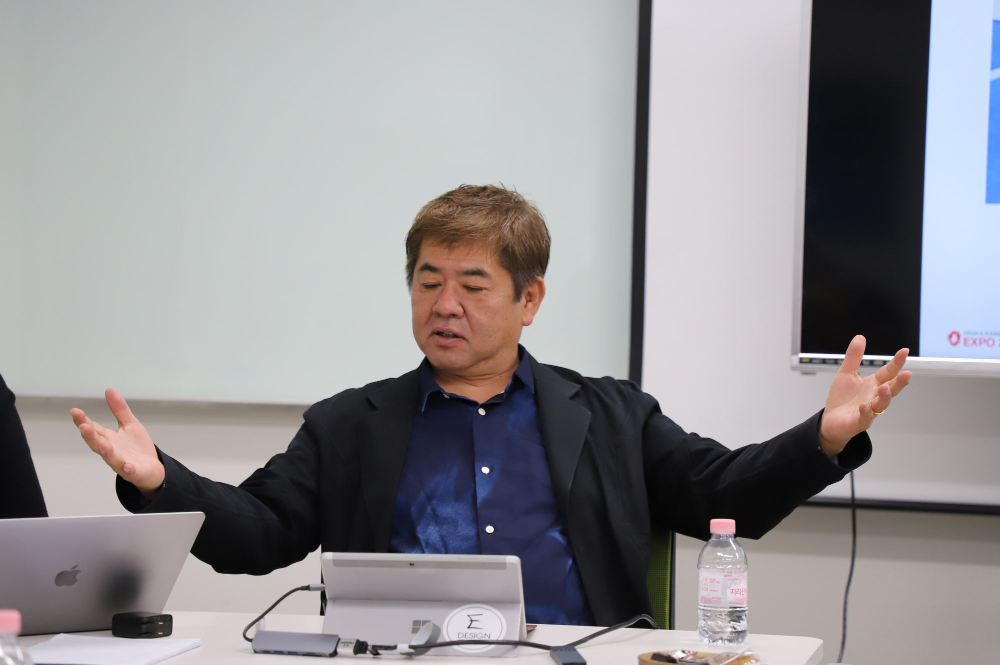
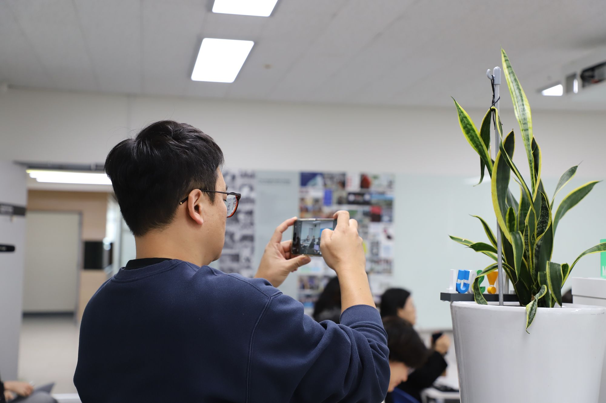
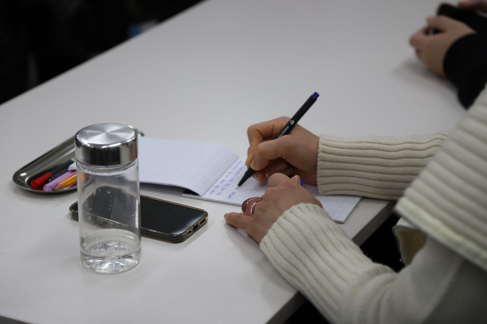
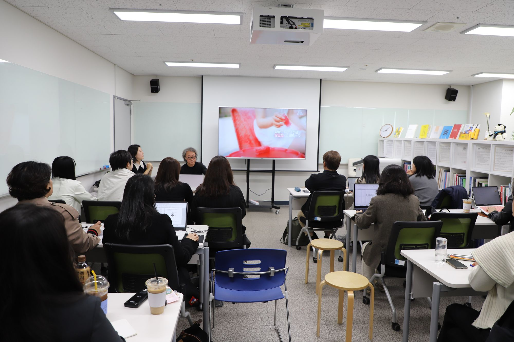
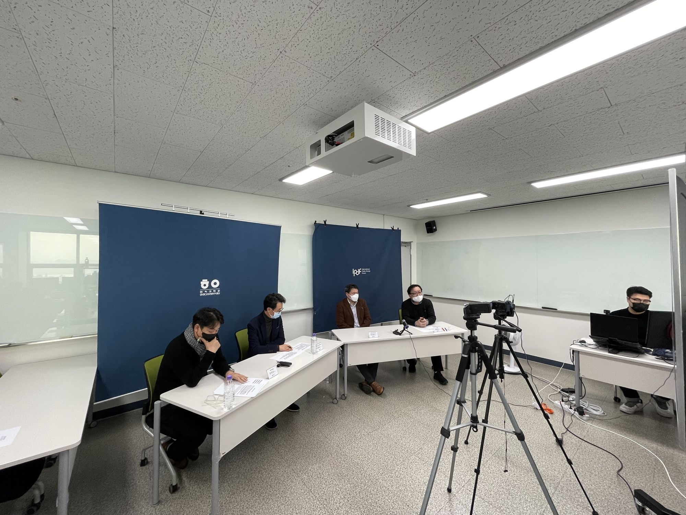
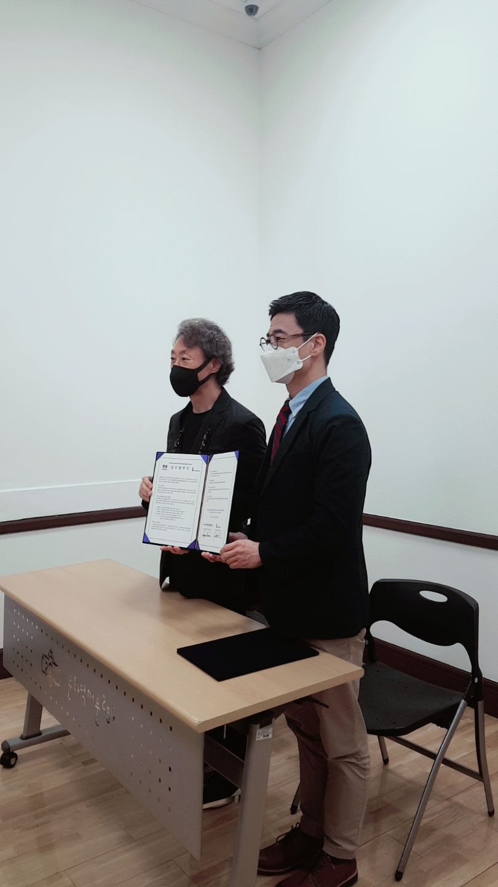
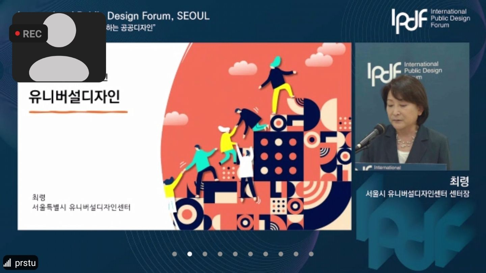
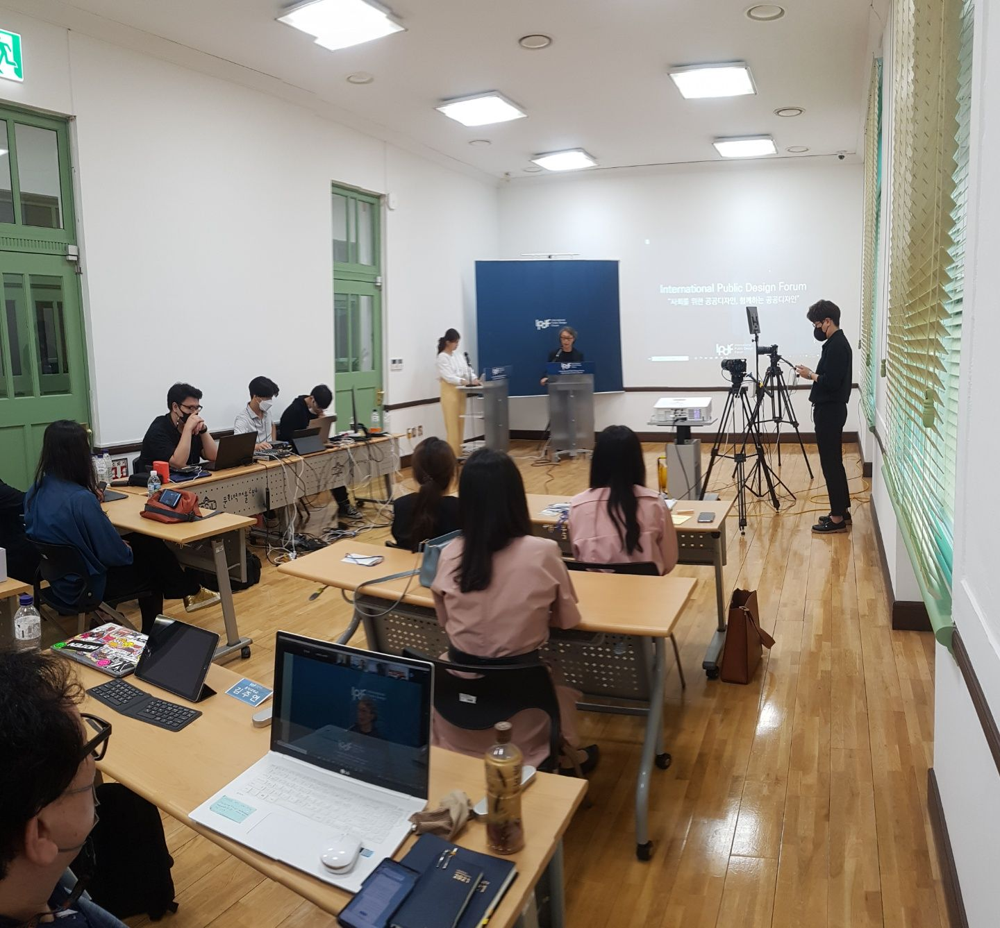
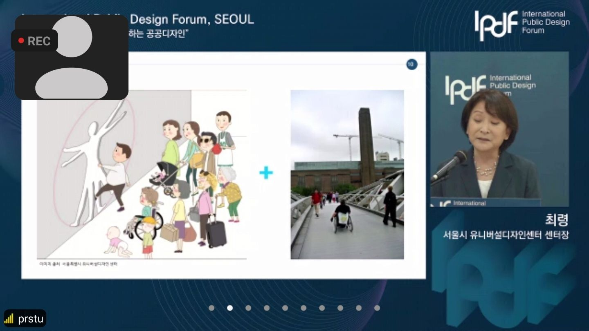

Gallery
제5회 국제공공디자인포럼 / 서울 / 2025
갤러리
포럼과 세미나, 교류 현장의 기록입니다. 사진을 누르면 크게 볼 수 있습니다.
제5회 국제공공디자인포럼
서울, 문화역서울284 RTO / 2025. 10. 29


제4회 국제공공디자인포럼
중국 시안, 시안건축과기대학 / 2024. 6. 14


GK 세미나 & Pre-IPDF 2024
일본 도쿄, GK 디자인그룹 / 2024. 1. 19

PDF X Cabanon Vertical
서울, 홍익대학교 / 2023. 9. 19


IPDF 세미나
서울, 홍익대학교 공공디자인연구센터








국제 교류와 파킹데이
중국 / 서울 / 2022~2023


제1회 국제공공디자인포럼
서울, 홍익대학교 공공디자인연구센터 / 2021. 12. 18



국제공공디자인포럼 발대식
서울, 문화역서울284 / 2021. 8. 28






